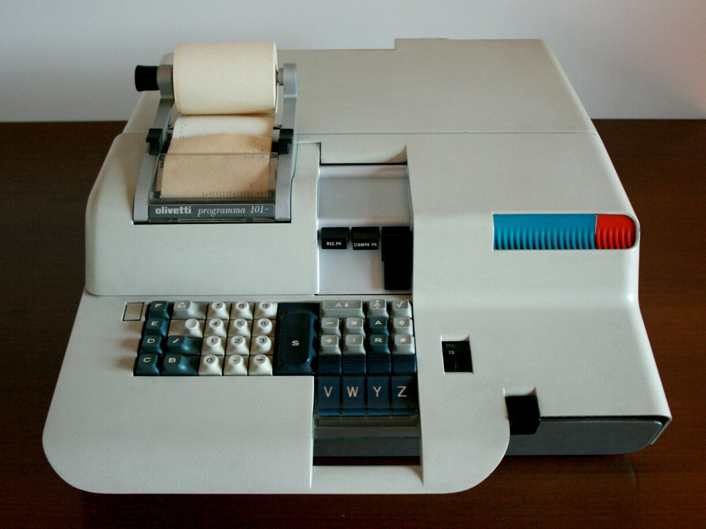
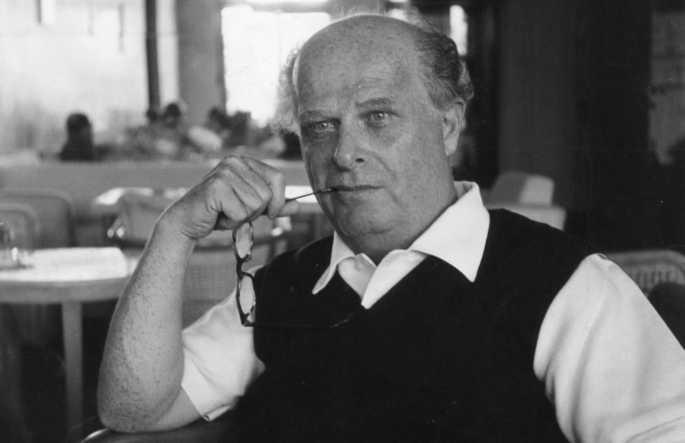

LA STORIA DELLA OLIVETTI
La nascita dell'Olivetti rappresenta un capitolo significativo nella storia dell'industria italiana e dell'innovazione tecnologica. L'Olivetti fu fondata nel 1908 da Camillo Olivetti, nacque come piccolo laboratorio meccanico a Ivrea, una città situata nel nord Italia. Grazie alla combinazione di un design innovativo e una produzione di alta qualità, l'Olivetti riuscì a guadagnare prestigio a livello internazionale e divenne un importante simbolo dell'eccellenza italiana nel campo della tecnologia innovativa. Il suo successo si basava non solo sulla produzione di macchine funzionali, ma anche sull'attenzione all'ergonomia e all'estetica, in modo tale da creare un legame unico tra forma e funzione.
Camillo Olivetti, un ingegnere di formazione e visionario imprenditore, aveva una forte passione per la tecnologia. L'Olivetti si differenziava dalle altre aziende per la sua attenzione verso l'ambiente di lavoro e il benessere dei dipendenti. Camillo Olivetti credeva nell'importanza di un ambiente di lavoro stimolante e confortevole, dove i dipendenti potessero esprimere la propria creatività. Questo approccio olistico si rifletteva nella progettazione degli edifici aziendali, caratterizzati da spazi aperti e aree verdi, che favorivano un clima di collaborazione e innovazione.
